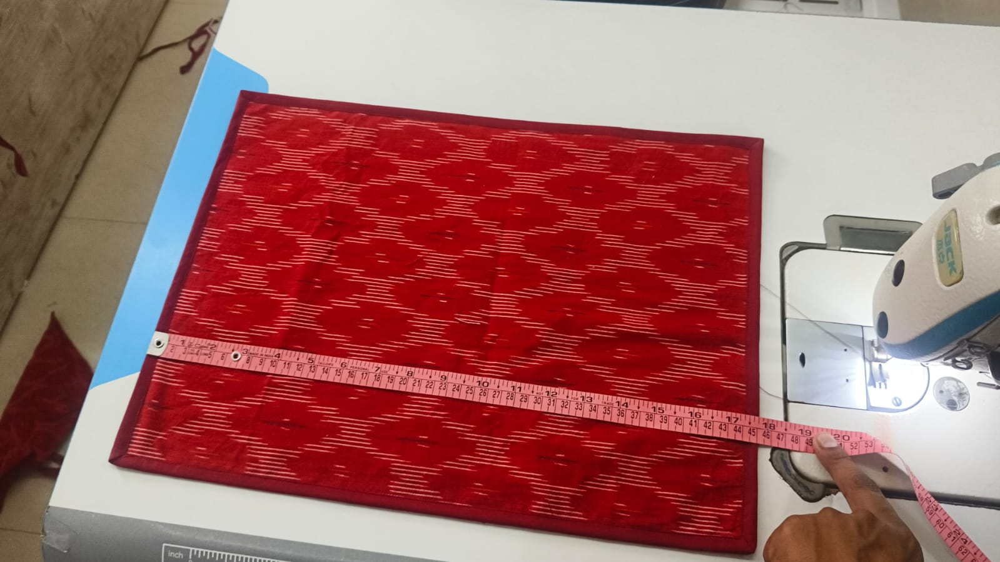
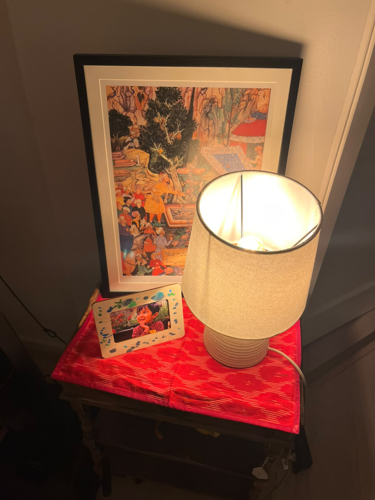
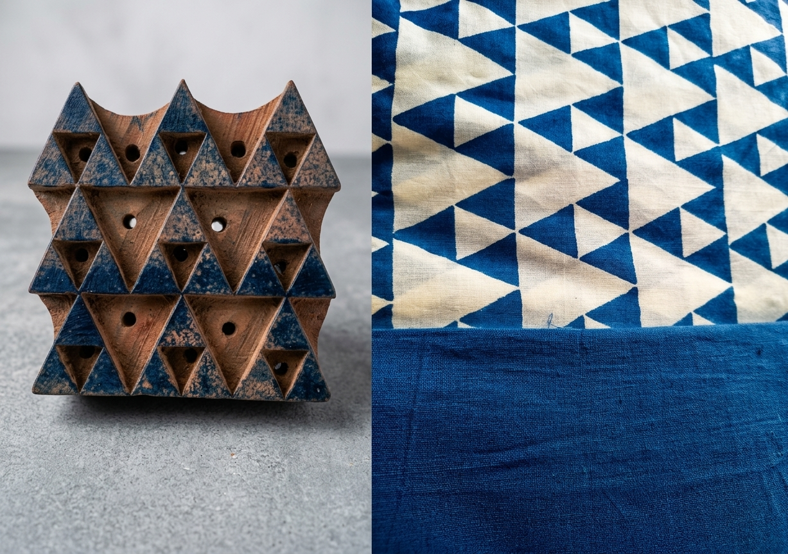
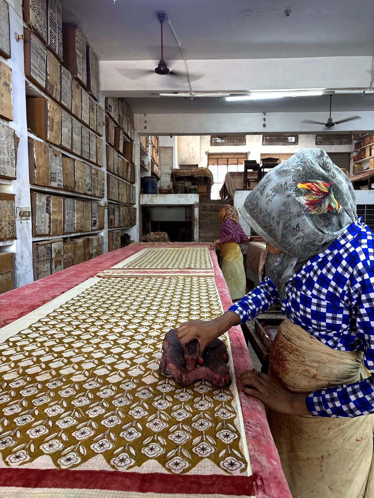
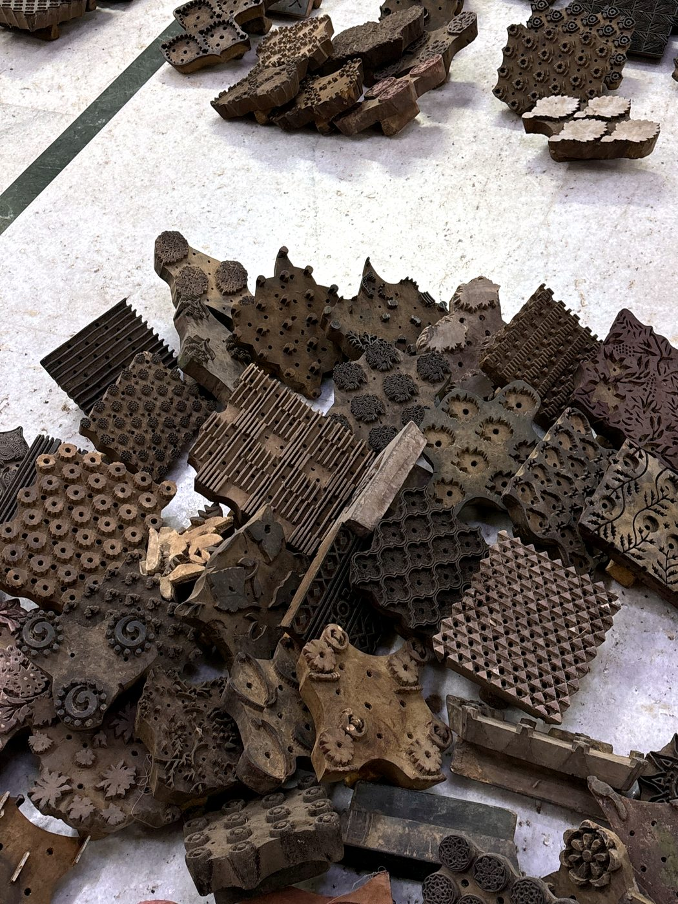
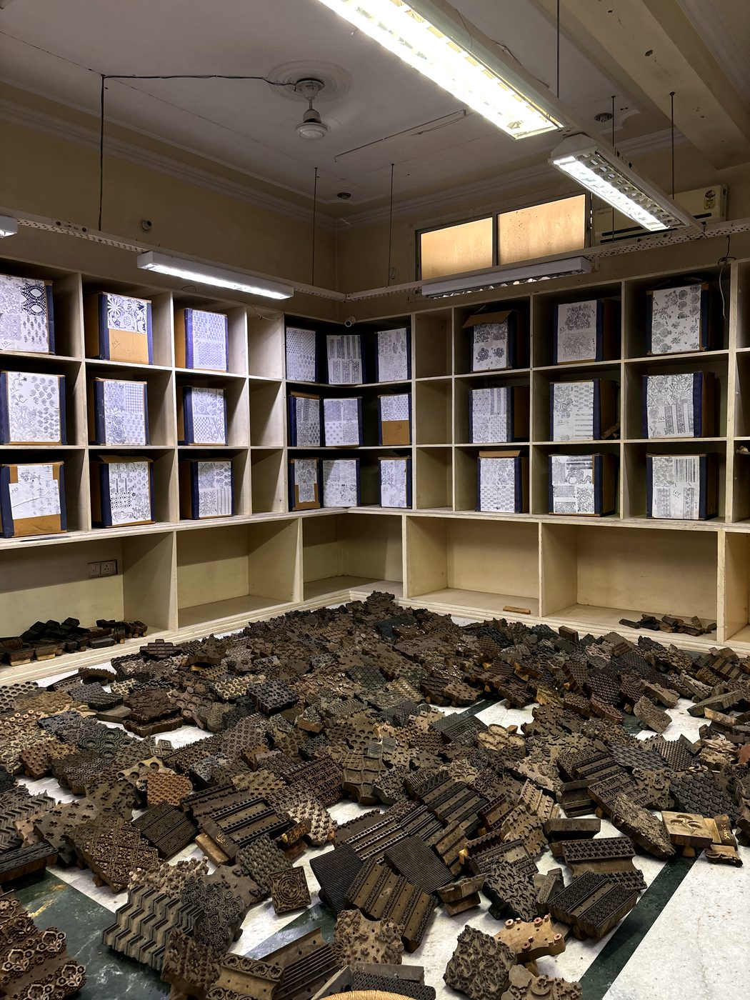
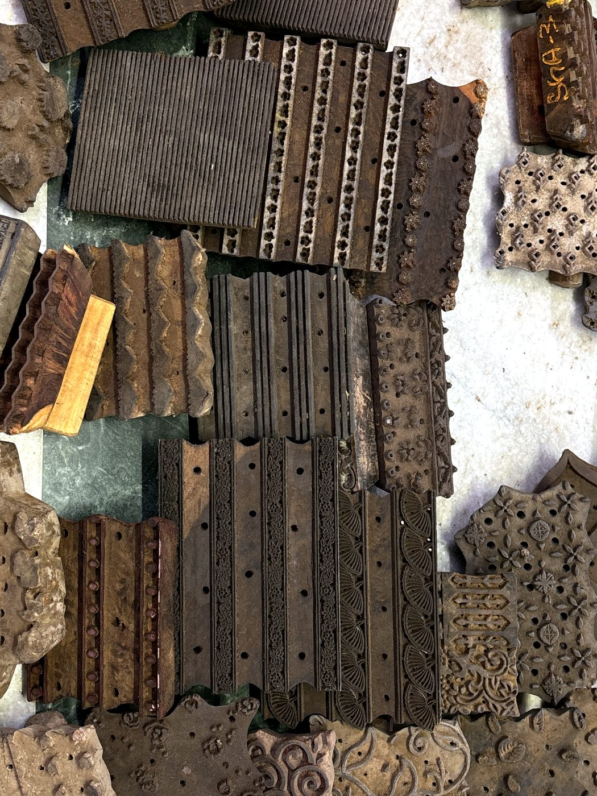
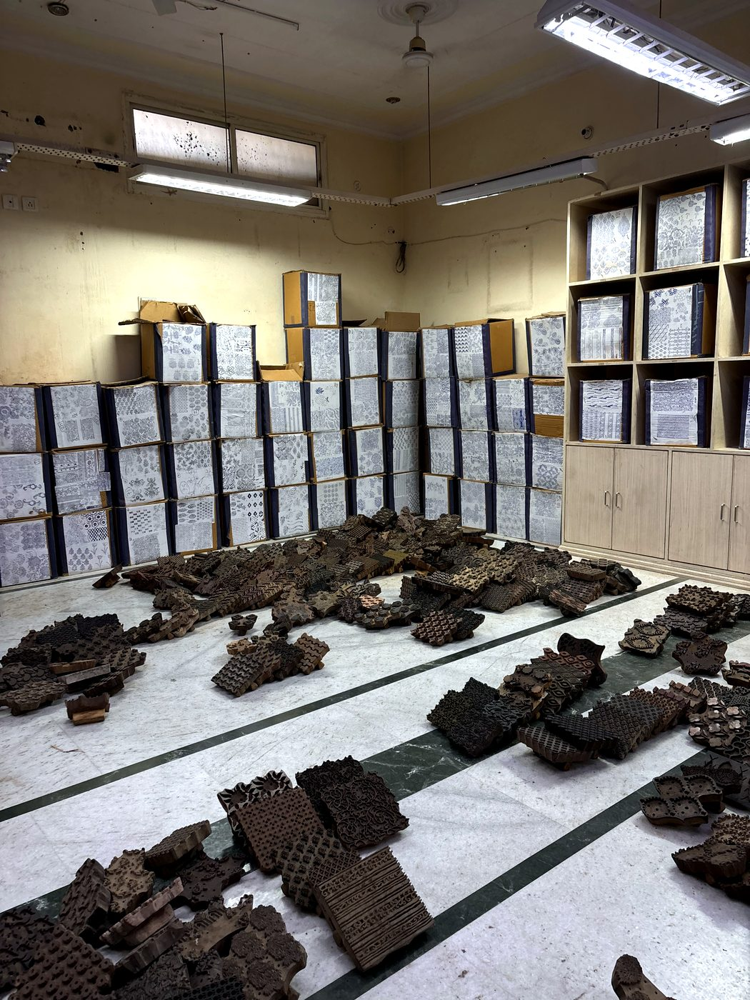
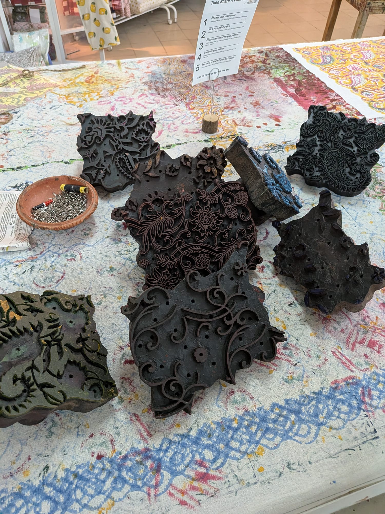

Every textile in the Ghar collection carries a specific craft tradition, from a specific place in India, made by artisans whose names we know.
Ikat · Telangana
A 2,000 year tradition, in red.
Few textile traditions in the world carry as much history as ikat. Its origins trace back over 2,000 years — fragments of ikat-dyed fabric found in ancient Egyptian tombs point to a thriving textile trade between India and the Mediterranean world long before recorded history.
The technique travelled along the Silk Route, taking root across Indonesia, Malaysia, the Philippines, Central Asia, Japan, Yemen, and as far as pre-Columbian Peru and Guatemala — yet it is in India that it found some of its most refined expressions.
In India, ikat is woven across three great traditions — Gujarat, Odisha, and Telangana. Each region developed its own distinct character.
Gujarat — The double ikat of Gujarat's Patola, considered among the most complex textile work in the world.
Odisha — The flowing floral patterns of Odisha's Sambalpuri.
Telangana — The bold geometric precision of Telangana's Pochampally clusters, where over 5,000 looms continue to weave today.
Unlike block printing, the ikat process begins before the loom. Threads are tied, resist-dyed in sequence, and only then woven together — the pattern emerging from the yarn itself, not from what is added afterwards.

Being measured at the workshop in India

Styled at home in Amsterdam
The result is the technique's defining quality: a soft, feathered edge where colours meet — impossible to replicate by machine.
For Ghar's first collection, we worked with cotton ikat from Telangana. Deep red, bold geometric pattern, and that unmistakable ikat bleed running through every piece. From workshops in India to a sideboard in Amsterdam, the same fabric. The same 2,000 year continuum.
Cotton ikatTelanganaFirst collection 2026
Block print · Rajasthan
A 2,000 year tradition, pressed by hand.
Block printing is one of the oldest textile techniques in the world. Its origins in India trace back over 2,000 years — archaeological fragments of printed cotton found in Rajasthan suggest that artisans were stamping pattern onto cloth.
The technique is entirely manual. Designs are hand-carved into teak or sheesham wood — a single block can take days to carve, its pattern cut in reverse so it reads correctly on the cloth. The printer dips the block in dye and stamps it by hand, aligning each impression by eye. Row by row, the pattern builds across the fabric.
Rajasthan is the heartland of Indian block printing, home to two great traditions:
Sanganer — Known for fine floral prints on white cotton using water-based dyes.
Bagru — Known for its earthy resist-printed patterns using natural pigments.
The British industrial revolution nearly ended all of it. Machine-printed fabric flooded Indian markets in the 19th century and many artisan communities collapsed. Block printing survived because some buyers valued what machines could not replicate — the slight variation between impressions, the depth of hand-applied colour, the presence of a human hand in every stamp — and now it is back in the forefront.

Blue & White Block Print in production — Rajasthan
No two impressions are identical. That is not a flaw in the process. It is the process.
For Ghar's first collection, we worked with block print artisans from Rajasthan — starting with blue and white triangles, crisp geometric pattern, stamped by hand onto cotton, with floral patterns on the way too. From workshop floor in India to a table in Amsterdam, each piece carries the mark of the hand that made it.
Block printRajasthanFirst collection 2026
The Ghar collection · A tribute
Blue and white — an old conversation.
17th century — China → Netherlands
The porcelain arrives
Chinese Ming Dynasty porcelain — cobalt blue on white — floods Dutch ports via VOC trade ships. When Chinese supply was disrupted, Dutch potters in Delft began replicating the style. Delft Blue was born.
17th century — India → Netherlands
The cotton follows
The VOC imported vast quantities of Indian block printed cotton — blue and white fabric from Rajasthan used for curtains, tablecloths, and bed covers in Dutch homes. The Dutch called it chintz, from the Hindi chheent — spotted cloth.
The shared language
Blue on white
Both Delft Blue and Indian block print arrived in Dutch homes at the same moment in history, sharing the same colour — cobalt blue on white. They were part of the same cultural appetite for the intricate, the handmade, the beautifully made.
The VOC — the Vereenigde Oostindische Compagnie, or Dutch East India Company — was founded in Amsterdam in 1602. For nearly 200 years it controlled trade routes between Europe, India, Southeast Asia, China, and Japan. It is why Amsterdam became one of the wealthiest cities in the world during the Golden Age, and why Dutch homes of the 17th century were filled with blue and white — from Delft and from India at the same time.
Ghar's Blue & White Block Print from Rajasthan is the direct descendant of that same Indian cotton that Dutch households coveted four centuries ago.
Bringing it back into Dutch homes feels less like a new idea and more like picking up an old thread.
Delft BlueVOC trade routesRajasthani chintz17th centuryBlue & White Block Print
Step by step
How block printing works.
01 — Design
The pattern is born
A motif is sketched — a vine, a bloom, a geometric repeat. Every line is deliberate.
02 — Carve
Days of carving
The design is carved into teak by hand. One pattern can take up to 7 blocks — one per colour.
03 — Print
Pressed by hand
The inked block is pressed onto the cotton, colour by colour. Each impression is a human decision.
04 — To your home
Cut, stitched, sent
Each piece is cut, stitched with contrasting piping, inspected — then sent from India to the Netherlands.
"The slight imperfections in the print are not mistakes. They are the mark of a human hand on every piece."
From the workshop
Where the blocks live.

One block, one press, one breath at a time.The rhythm of the workshop.

Every pattern begins as carved teak.

Generations of patterns, kept like library books.The pattern, up close.

Border blocks — the frames of every design.

A floor of blocks, each one a design memory.

More blocks, more patterns, more possibility.The impression, in motion.
A closer look, out on a picnic.
400+
years of block printing heritage
Our makers
Meet our makers — the heart of our collection.
Behind every Ghar piece is a community of skilled artisan entrepreneurs across India, each bringing their own craft and expertise to every piece we make.
Our cotton comes directly from these makers, and every print is applied by hand by artisans whose names we know, with techniques passed down through generations. When you buy from Ghar, you support these communities directly — real people, fairly valued, with a stake in everything they create.
Grateful, always, to Karghewale for their support and partnership on this journey.
Makers with a stake
We work directly with artisan-led workshops, skipping the middlemen.
Upskilling artisan communities
Endangered textile skills, preserved for the next generation.
Transparent supply chain
We know every step from the artisan's workshop in India to your door.
Postcards from Ghar.
New collections, market dates, and stories from India — a little colour in your inbox, now and then.